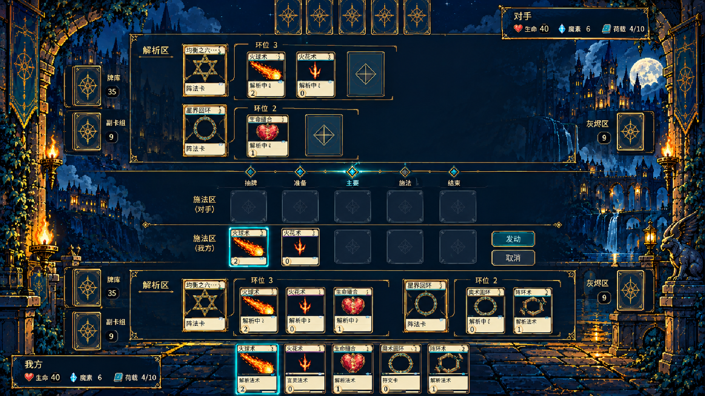
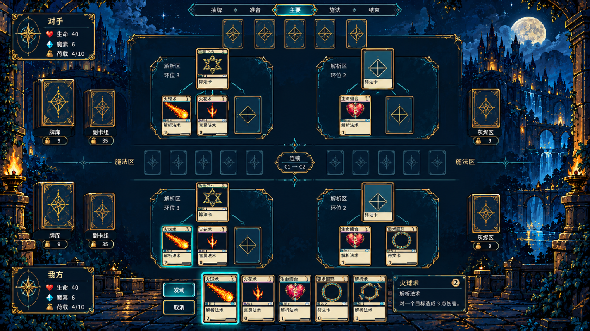
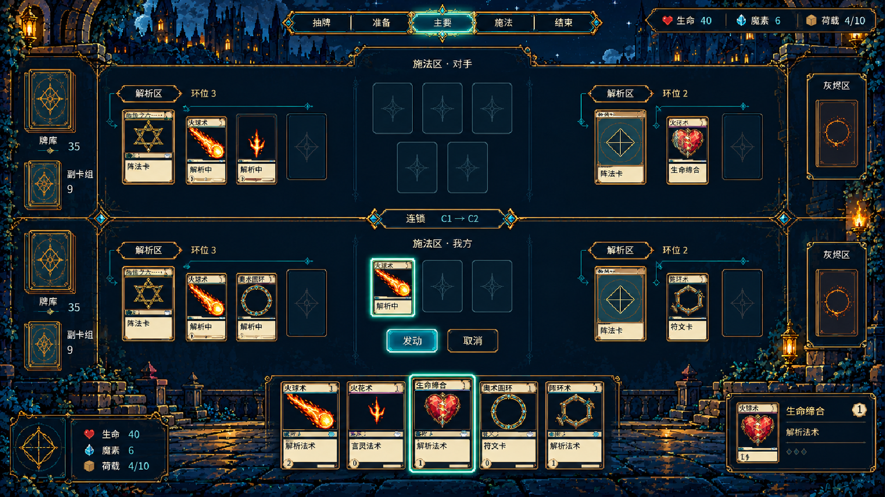

2D对战场地布局样稿 · 1920×1080
保持当前深蓝像素奇幻、古金与青绿符纹。此页用于布局评审：样稿中的卡名、类型、数值与槽数需在定稿时校正。原图1672×941，以下为等比例1080p适配版。
A · 阵法行布局 — 沿行关联阵法与环位，适合浏览；上半场留白仍需收紧。
B · 阵法分组布局 — 每个阵法和所属法术集中成组；中央双方施法区须进一步分隔。
C · 中央施法布局 — 上下对抗、中央施法、两翼解析；更多阵法的浏览需后续验证。